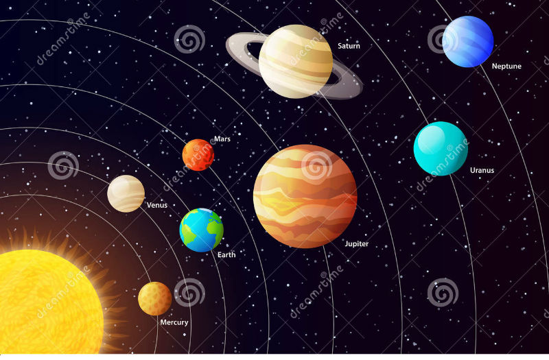

Primer Párrafo:
El Sistema Solar forma parte de la Vía Láctea y está formado principalmente por una estrella llamada Sol y ocho planetas como lo son Mercurio, Venus, Tierra, Marte, Júpiter, Saturno, Urano, Neptuno Algunos planetas pueden tener satélites que giran alrededor de estos. satélites.

Segundo Párrafo:
El radio ecuatorial es un factor importante ya que se define como la distancia del centro del planeta a su ecuador imaginario, con este factor se puede determinar la masa de cualquier planeta y con la masa de un planeta se puede determinar otros factores importante como la gravedad . La distancia de un planeta respecto del Sol puede determinar las condiciones de temperaturas y el tipo de clima que puede haber en cada planeta.